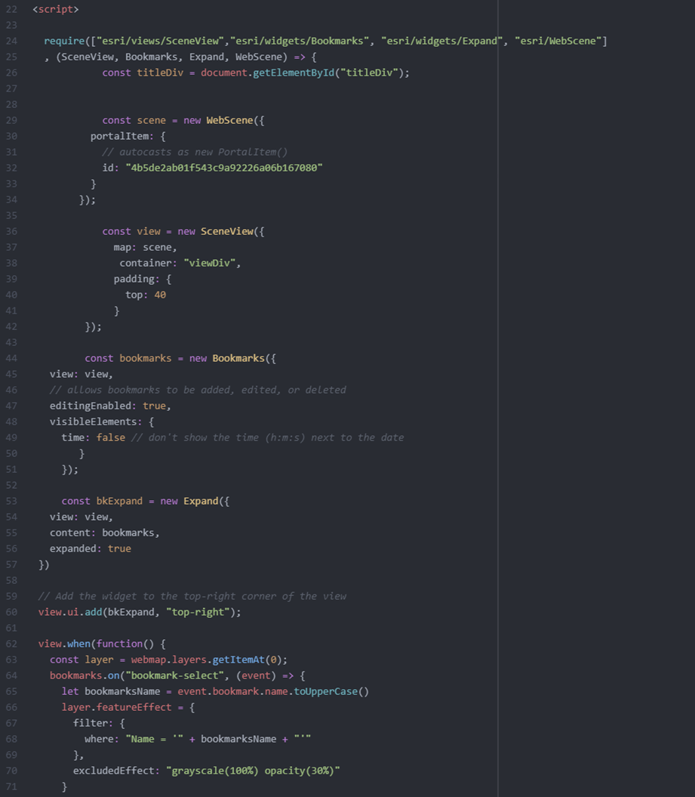
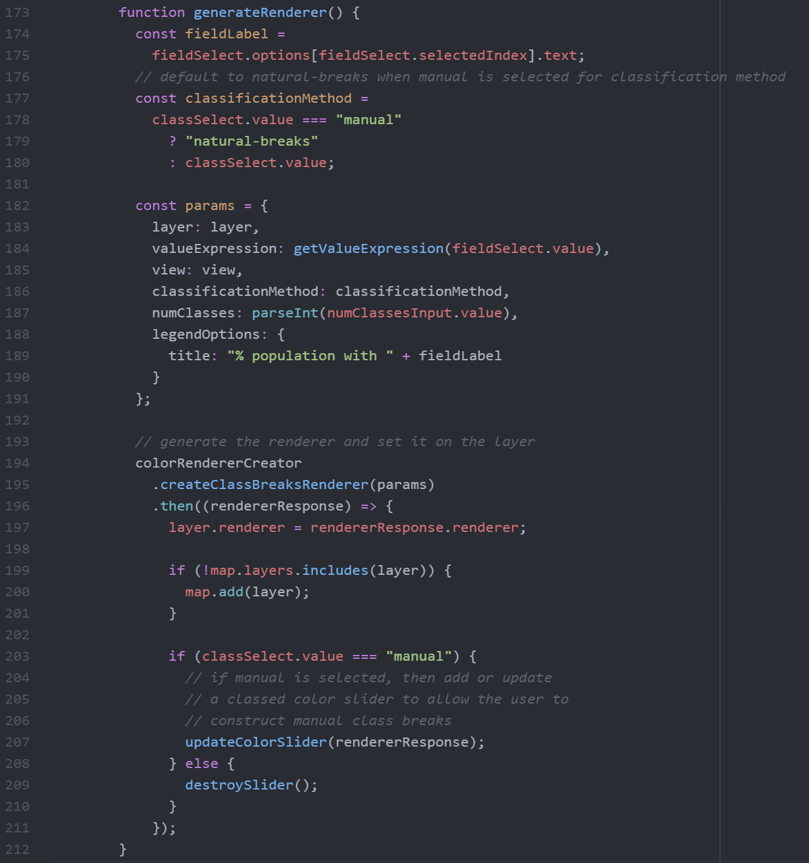

ArcGIS Maps SDK for JavaScript Mapping Projects
Yao-Ting Yao
This section includes two projects written using the ArcGIS Maps SDK for JavaScript. The first project 3D web map to visualize buildings and utilities in Rotterdam, Netherlands provides 3D buildings, infrastructure, and underground utility. The second project 2017 States Education Smart Mapping is a 2D interactive web map that allows users to select fields and customized classification methods
3D web map to visualize buildings and utilities in Rotterdam, Netherlands
The first part of this project followed an ESRI tutorial creating a 3D web scene in ArcGIS Online, incorporating 3D buildings, infrastructure, and underground utility layers in Rotterdam, Netherlands.
In the sencond part of this project, the ArcGIS Maps SDK for JavaScript was utilized to design an interactive 3D Web Map, featuring bookmarks, mouse hover effects, and pop-up information. The Bookmarks widgets allow users to create bookmarks and have a navigation effect when clicking the button.
2017 States Education Smart Mapping
In this project, the 2017 States Education Smart FeatureServer was employed to develop an interactive 2D Web Map. This map allowed users to select fields and classification methods, enhancing the customization options available.
This web map was created using the Color Renderer Creator and Legend widgets. These widgets enable the user to modify the colors on the map and legend when they make changes to features and classification methods. Additionally, the ClassedColorSlider widget allows users to customize the manual interval classification according to their preferences.
